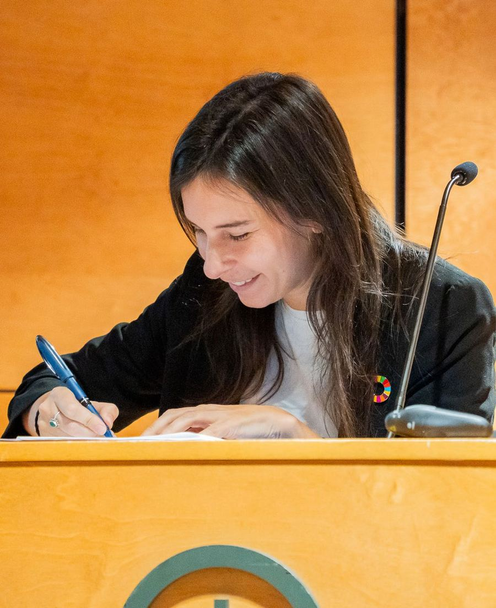

🌍
Reconocimiento internacional
Reconocimiento fuera de fronteras y la primera red nacional
UTEC es la primera universidad de Uruguay en obtener la calificación de plata en el sistema STARS de AASHE, y contribuyó a la gesta de la Red UNIS de universidades que trabajan en sostenibilidad.
Leer la nota completa →